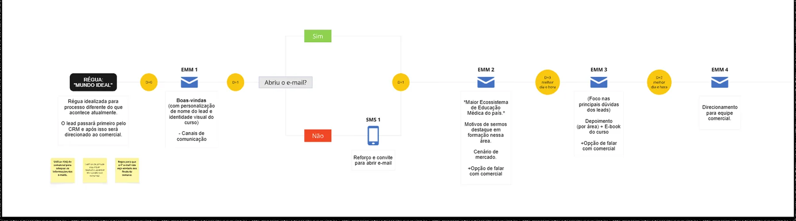
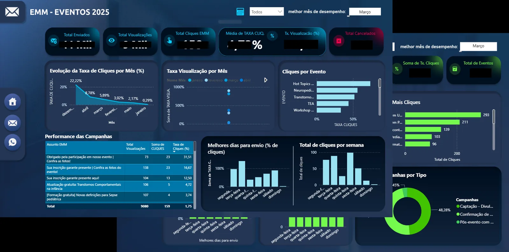

FROM SENDS
TO JOURNEYS.
Structuring and running email journeys and multichannel CRM for lead acquisition and nurturing. The work was turning one-off sends into a cadence that reacts to lead behavior — from first contact to enrollment — and making the operation measurable.
Context
Acquisition across many channels, relationship without a cadence.
The institution acquired postgraduate and continuing-education leads through multiple channels, but communication with those bases had no structured cadence. The relationship relied on one-off sends, with no journey nurturing the lead from first contact to enrollment — and no continuity afterward.
Problem
One-off sends, no nurturing, no measurement.
- Low open rates and no structured lead nurturing.
- Results read only from spreadsheets, with no consolidation.
- Underperforming email creative.
- Lack of alignment between CRM and Sales.
- No post-enrollment nurturing — the relationship stopped at conversion.
My role
From creative to performance: running CRM end to end.
- Building email creative in modular HTML.
- Assembling and sending journeys in Salesforce.
- Structuring communication cadences with the team.
- Reading performance and presenting results via dashboard.
- Bridge between CRM and Sales.
Process
From isolated sends to a cadence that reacts to behavior.
The welcome cadence greeted every lead with name personalization. From there, the journey branched by behavior: the "opened the email?" trigger defined the next step — those who opened moved into nurturing; those who didn't got a reinforcement SMS and re-invite.
Initial cadence with name personalization.
"Opened the email?" defines the next step.
Sequence that progressively warms up the lead.
Form submission and enrollment.

Decisions
The choices that structured the operation.
One-off sends become a journey that reacts to opens.
Recurring relationship channel with the base.
Purchase flow with recovery, connecting CRM and conversion.
From spreadsheet to Power BI, with a metrics hierarchy.
Subject line and CTA tested as a continuous practice.
Open → read → click as the analysis standard.
Deliverables
What came out of it, concretely.
- Communication cadences for acquisition and nurturing.
- Reusable email creative in modular HTML.
- Automated Salesforce journeys with behavior-based branching.
- Newsletter as a recurring channel.
- Courses with checkout and cart recovery.
- Performance dashboard (Power BI) replacing the spreadsheet.

Impact
From one-off sends to a measurable operation.
One-off sends to the whole base · no structured nurturing · spreadsheet reporting · CRM and Sales misaligned.
Structured, measurable cadence · behavior-based branching · continuous dashboard · CRM and Sales coordinated by the journey.
Learning
What stuck.
- A cadence that reacts to behavior converts better than send volume.
- Consolidated measurement changes the conversation: decisions stop being opinion and become data reading.
- Most of the gain came from structuring what already existed in a scattered form, not from adding complexity.